폼 빌더 소개¶
폼 빌더는 OZ in Office라고도 합니다. OZ in Office는 Microsoft Office로 만든 문서를 입력 기능을 갖춘 전자 문서로 변환하는 폼 에디터입니다. OZ in Office를 사용하면 기존에 Excel, Word, PowerPoint로 만들어진 업무 양식(계약서, 신청서, 동의서, 품의서 등)을 간단하고 쉽게 전자 문서로 변환할 수 있습니다.
기존에는 기업의 Excel, Word, PowerPoint 문서를 전자 문서로 개발하려면 프로그래밍 개발 수준의 개발자용 문서 개발 도구가 필요했습니다. 그러나, OZ in Office을 이용하면 Office 제품을 사용할 수 있는 수준이면 누구나 전자 문서를 손쉽게 만들 수 있습니다.
OZ in Office는 MS Office에 Add-on되어 리본 메뉴로 나타나서 사용이 간단하며, 전자 서명, 체크 박스, 텍스트 박스, 카메라, 녹음 등 OZ의 다양한 입력 기능을 제공하고 있습니다.
OZ in Office의 입력 기능을 이용하여 전자 문서를 만드는 과정은 다음과 같습니다.

폼 빌더 다운로드 및 설치¶
이폼사인 로그인 후 대시보드 화면 왼쪽 상단의 메뉴 아이콘(
 )을 클릭하면 나타나는 사이드바 메뉴 중 가장 하단의 eformsign 폼 빌더 다운로드 버튼을 클릭합니다.
)을 클릭하면 나타나는 사이드바 메뉴 중 가장 하단의 eformsign 폼 빌더 다운로드 버튼을 클릭합니다.다음과 같은 eformsign 폼 빌더 다운로드 페이지가 나타납니다. 페이지 하단의 폼 빌더 다운로드 버튼을 클릭합니다.

다운로드된 폼 빌더 실행파일을 클릭하면 다음과 같은 설치 화면이 나타납니다. 옵션 중 전체 설치(C)를 선택하고 다음(N) > 버튼을 클릭합니다
설치가 진행되면 다음과 같은 화면이 나타납니다.
설치가 완료되면 완료 버튼을 클릭해 설치 화면을 닫습니다.
MS Office (Word, Excel, PowerPoint)를 실행해 폼 빌더가 제대로 설치되었는지를 확인합니다. 다음과 같이 OZ in Word/Excel/PowerPoint가 나타나면 정상적으로 설치된 것입니다.
{kind=link}
{kind=link}
{kind=link}
{kind=link}
{kind=link}
폼 빌더 메뉴 구성¶
폼 빌더를 설치한 후 MS Office의 엑셀, 워드, 파워포인트를 실행하면 상단의 OZ in Office 리본 메뉴에 OZ in Excel, OZ in Word, OZ in PowerPoint 탭이 추가된 것을 확인할 수 있습니다.
{kind=link}
1. 파일: 작성한 문서를 전자서식으로 실행해보고 이폼사인에 템플릿으로 업로드하거나 이폼사인에서 다운로드 받을 수 있습니다.
2. 속성: 컴포넌트에 대한 ID, 항목 등 속성을 설정합니다.
3. 입력: 템플릿에 사용할 컴포넌트를 추가합니다.
4. 정보: 템플릿에 자동으로 멤버나 사용일 정보를 기입하기 위해 사용자, 사용일 정보 컴포넌트를 추가합니다.
5. 그리기: 컴포넌트를 선택하여 원하는 위치와 크기로 추가합니다. 그리기는 워드, 파워포인트에서만 지원됩니다.
6. 삭제: 컴포넌트를 선택한 뒤 삭제 버튼을 클릭하면 컴포넌트가 삭제됩니다.
7. 창: 컴포넌트 속성창을 열거나 컴포넌트를 선택합니다.
8. 도움말: 폼 빌더 버전을 확인하고 업데이트를 실행합니다.
컴포넌트 개요¶
컴포넌트는 전자 문서에서 사용자가 내용을 입력할 수 있는 입력란을 만들어주는 역할을 합니다. 서명, 체크, 날짜, 텍스트 등의 다양한 형식의 컴포넌트가 있으며 각각의 컴포넌트는 속성창을 통해 세부 사항을 설정할 수 있습니다.
컴포넌트 종류¶
eformsign은 다음의 컴포넌트를 지원합니다.
체크: 체크할 항목이 있을 때 사용합니다.
선택: 여러가지 항목 중 한가지를 선택합니다. 다중 선택도 설정 가능합니다.
텍스트: 1~2단어의 짧은 텍스트를 입력합니다.
멀티라인: 여러 줄의 긴 텍스트를 입력합니다.
콤보: 클릭하면 드롭다운 메뉴가 나타나며 여러 항목 중 하나를 선택합니다.
날짜: 특정 날짜를 입력합니다.
숫자: 숫자를 입력합니다.
토글: 2개 이상의 값을 입력하면 버튼을 클릭할 때마다 다른 값으로 전환됩니다.
서명: 서명을 입력합니다.
카메라: 카메라가 연결된 기기(스마트폰, 태블릿 등)에서는 카메라로 사진을 찍거나 사진첩에서 사진을 선택합니다. 카메라가 없는 기기(일반 PC)에서는 이미지 파일을 선택합니다.
녹음: 녹음 기능이 있는 기기에서 버튼을 클릭해 녹음을 진행합니다.
첨부: 파일 첨부 기능을 추가합니다.
사용자: 문서를 작성 또는 수정한 멤버의 정보를 입력합니다.
사용일: 문서를 작성하거나 수정한 날짜를 입력합니다.
문서: 문서 내에 문서 번호나 문서 ID를 입력합니다.
레이블: 별도의 설정값을 문서에 입력할 때 사용합니다.
컴포넌트 속성 확인하는 방법¶
모든 컴포넌트는 속성 창에서 각각 세부 설정을 할 수 있습니다. 속성은 속성 아이콘 또는 속성 메뉴를 클릭하여 설정 및 확인할 수 있습니다.

Note
모든 컴포넌트는 ID를 가지고 있어야 합니다. ID는 컴포넌트를 추가하면 자동으로 생성되기는 하지만, 컴포넌트에 무엇이 입력되는 지를 보여줄 수 있는 직관적인 단어로 변경하는 것이 좋습니다. 예를 들어, 홍길동, 이순신 등이 입력되는 컴포넌트의 ID는 ‘이름’으로 설정할 수 있습니다.
컴포넌트 추가하는 방법¶
컴포넌트는 크게 엑셀에서 추가하는 방법과 워드 또는 파워포인트에서 추가하는 방법이 있습니다. 워드 또는 파워포인트에서 컴포넌트를 추가하는 방법은 각각 다음과 같습니다.
엑셀에서 추가하기
엑셀 파일을 열고 OZ in Excel 리본 메뉴로 이동합니다.
컴포넌트를 추가할 셀을 선택합니다.
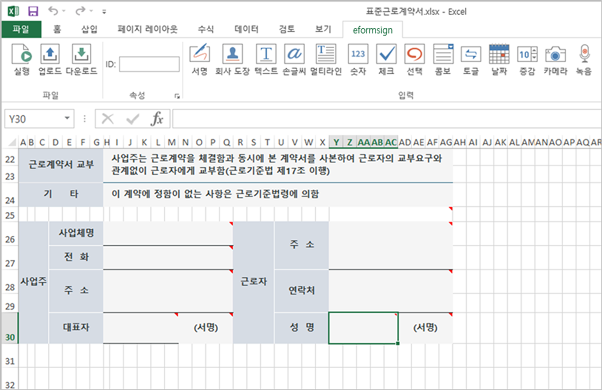
원하는 컴포넌트를 클릭합니다.
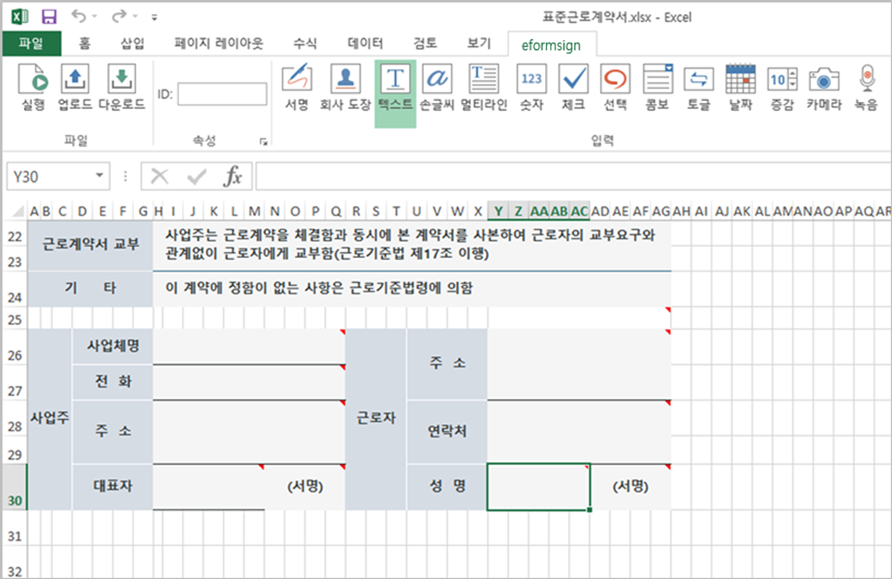
컴포넌트 속성에서 세부 사항을 설정합니다.
워드 또는 파워포인트에서 추가하기
방법 1: 컴포넌트 클릭하여 추가하기
워드 또는 파워포인트 파일을 열고 컴포넌트를 추가할 위치를 선택합니다.
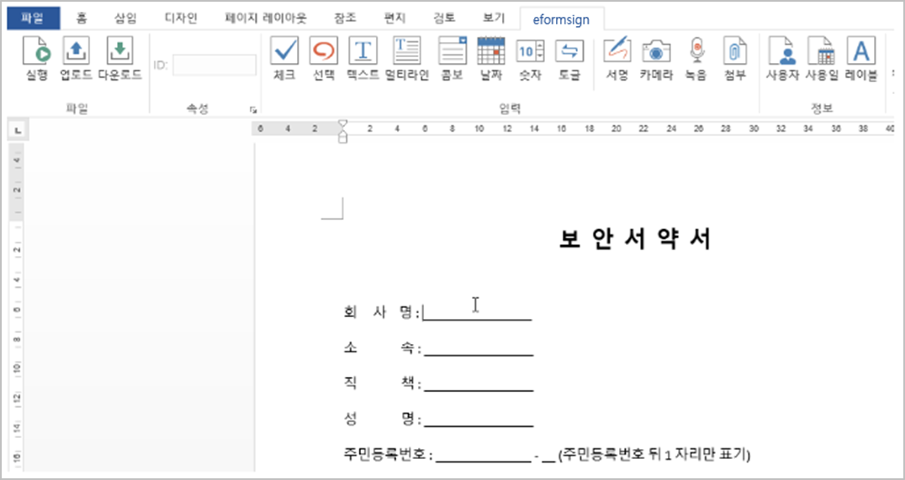
OZ in Word 또는 OZ in PowerPoint 리본 메뉴에서 추가하고자 하는 컴포넌트를 클릭합니다.
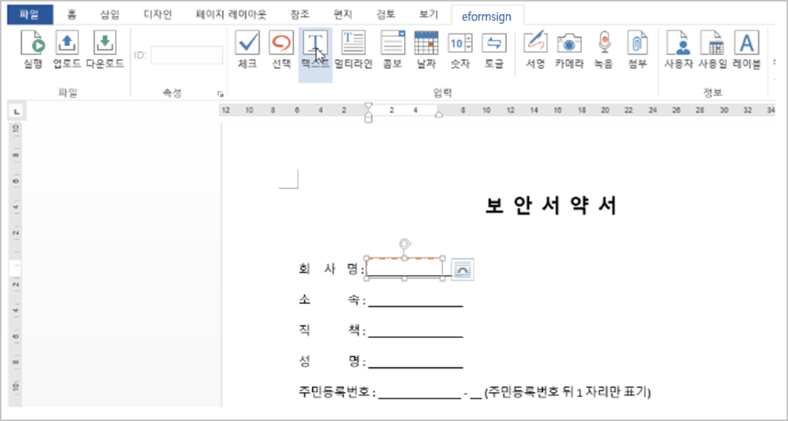
추가된 컴포넌트의 크기를 조절합니다.

방법 2: 컴포넌트를 그려서 추가하기
워드 또는 파워포인트를 열고 OZ in Word 또는 OZ in PowerPoint 리본 메뉴로 이동합니다.
컴포넌트 그리기 아이콘을 클릭하여 나타나는 드롭다운 목록에서 추가할 컴포넌트를 선택합니다.

원하는 위치와 크기로 컴포넌트를 추가합니다.

컴포넌트 삭제하는 방법¶
삭제하고자 하는 컴포넌트를 선택하고 OZ in Office 메뉴의 삭제( ) 아이콘을 클릭합니다. 여러 개의 컴포넌트를 선택해서 한 번에 삭제하는 것도 가능합니다.
) 아이콘을 클릭합니다. 여러 개의 컴포넌트를 선택해서 한 번에 삭제하는 것도 가능합니다.
컴포넌트별 사용 방법¶
eformsign은 MS Office의 OZ in Office 리본 메뉴를 통해 체크박스, 콤보박스, 텍스트, 서명 등 다양한 컴포넌트를 지원하고 있습니다.
OZ in Office의 모든 컴포넌트는 공통 속성과 고유 속성을 가지고 있으며, OZ 컴포넌트 속성 창에서 공통 속성과 각 입력 기능의 고유 속성을 확인할 수 있습니다. 공통 속성으로는 ID와 툴팁 텍스트가 있으며, 각 속성의 의미는 다음과 같습니다.
ID: 컴포넌트 ID 각각의 컴포넌트를 식별할 수 있는 고유한 ID 입니다. 워크플로우 또는 필드 설정 단계에서 필수 입력 또는 편집 제한 시 컴포넌트 ID로 확인하여 지정할 수 있으며, CSV로 입력 데이터를 추출하여 확인하고자 할때 컴포넌트 ID로 구분할 수 있습니다.
툴팁 텍스트: 컴포넌트 툴립 텍스트 수신자가 문서 열람 시 Windows 환경에서는 컴포넌트에 마우스를 위치하면 툴팁 텍스트가 말풍선 형태로 표시되며, 모바일 환경에서는 컴포넌트가 다이얼로그로 실행될 때 툴팁 텍스트가 다이얼로그의 제목으로 표시됩니다.
Note
OZ 컴포넌트 속성 창은 입력 기능이 적용된 위치를 선택한 후 OZ in Office 메뉴의 속성 아이콘( )을 클릭하면 표시됩니다.
)을 클릭하면 표시됩니다.
Note
정보 타입인 사용자, 사용일, 문서, 레이블에는 툴팁이 없습니다.
eformsign OZ in Office의 각 컴포넌트에 대한 설명은 다음과 같습니다.
체크¶
체크 컴포넌트는 각 항목의 체크 여부를 확인하고자 할때 사용합니다. 비슷한 컴포넌트로 선택 컴포넌트가 있으며, 체크 컴포넌트는 해당 항목의 체크 여부를 확인할 때 사용하고, 선택 컴포넌트는 선택한 항목이 무엇인지 알아야 할 때 사용한다는 차이가 있습니다.

체크 컴포넌트의 입력값은 데이터 다운로드 시 다음과 같이 나타납니다.
항목에 체크한 경우: true
항목에 체크하지 않은 경우: false
워드, 파워포인트에서는 체크 컴포넌트가 직사각형 도형처럼 나타납니다. 항목의 내용은 컴포넌트 도형 안에 입력해야 합니다.
컴포넌트 속성

① ID
선택 컴포넌트는 각 항목별로 다른 ID를 부여해야 합니다. 여러 개의 선택 컴포넌트에 같은 ID가 부여될 경우 해당 컴포넌트 중 마지막 컴포넌트의 입력값만 표시됩니다.
② 체크 스타일
선택 컴포넌트는 속성에서 스타일을 지정할 수 있습니다. 체크를 선택하면 속성에서 체크박스가 기본으로 설정되어 있으며, 이외에 라디오 버튼, 빨간 원 표시를 선택할 수 있습니다.
다음의 예시를 보면, 왼쪽부터 체크 / 라디오 / 원 선택 시 각각 체크박스가 어떻게 표시되는지를 알 수 있습니다.

선택¶
선택 컴포넌트는 여러 항목 중 어떤 항목을 선택했는지 확인해야 할 때 사용합니다. 선택 컴포넌트의 선택값은 데이터 다운로드 시 여러 항목 중 선택한 항목명이 나타납니다.
워드, 파워포인트에서는 선택 컴포넌트가 직사각형 도형으로 표시됩니다. 항목의 내용은 컴포넌트 도형 안에 입력해야 합니다.
컴포넌트 속성
{kind=link}
① ID
선택 컴포넌트의 선택 항목에는 선택 그룹마다 모두 같은 ID를 부여해야 합니다.
예를 들어, 1번 문제에 대해 1, 2, 3, 4, 5의 보기가 있는 경우 1, 2, 3, 4, 5 항목에 같은 ID ‘1번’을 부여합니다. 2번 문제의 1, 2, 3, 4, 5 보기에는 ‘2번’ ID를 부여합니다. 다음 예시 화면의 모든 선택 항목에 대한 ID는 ‘나이 선택’으로 지정합니다.
{kind=link}
② 선택 스타일
선택 컴포넌트는 속성에서 스타일을 지정할 수 있습니다. 빨간 동그라미가 나타나는 ‘원’이 기본으로 설정되어 있으며 이외에 체크박스, 라디오 버튼 표시를 선택할 수 있습니다.
③ 다중 선택 가능
다중 선택 가능을 체크하면 1개 이상의 항목을 선택할 수 있습니다. 1개 이상의 항목을 선택한 경우 데이터 저장 시 선택된 여러 개의 항목이 콤마(,)로 구분되어 저장됩니다.
④ 선택 안 함 가능
선택 안 함 가능을 체크하면 선택한 항목을 다시 클릭해 선택 해제를 할 수 있습니다.
⑤ 툴팁 텍스트
해당 입력란에 마우스를 위치하면 툴팁 텍스트에 입력한 설명이 나타납니다.
콤보¶
여러가지 항목 중에서 한 항목을 선택해야 할 때, 콤보 컴포넌트를 사용합니다.
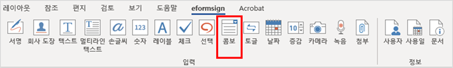
다음과 같이 선택란을 클릭하면 항목 리스트가 나타납니다.

컴포넌트 속성
{kind=link}
① ID
콤보 컴포넌트의 ID를 입력합니다. 예를 들어, 좋아하는 색을 고르는 컴포넌트의 ID는 ‘좋아하는 색’으로 합니다.
② Items
선택 항목들을 입력합니다. 엔터(Enter)로 여러 항목을 구분합니다.
Note
콤보 컴포넌트의 선택란에 ‘선택하세요’를 표시하려면, Items 항목 가장위에 ‘선택하세요’를 입력하고 컴포넌트 안에도 동일하게 ‘선택하세요’를 입력합니다.
③ 입력 데이터 초기화 가능
입력 데이터 초기화 가능에 체크하면 선택한 항목을 선택 해제할 수 있습니다. 입력 데이터 초기화는 다음과 같이 실행할 수 있습니다.
PC 환경: 컴포넌트를 오른쪽 마우스로 클릭하면 나타나는 팝업 메뉴에서 ‘입력 데이터 초기화’를 선택합니다.
모바일 환경: 휴지통 아이콘을 클릭합니다.
④ 툴팁 텍스트
선택란에 마우스를 위치하면 툴팁 텍스트에 입력한 설명이 나타납니다.
텍스트와 멀티라인¶
텍스트 컴포넌트와 멀티라인 컴포넌트 모두 텍스트 입력란을 만들 때에 사용합니다. 텍스트 컴포넌트은 1~2 단어의 짧은 텍스트, 멀티라인은 1줄 이상의 긴 텍스트에 적합합니다.
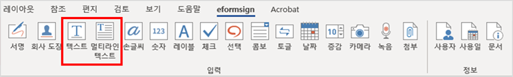
컴포넌트 속성
{kind=link}
① ID
텍스트/멀티라인 컴포넌트의 ID를 입력합니다. 예를 들어, 홍길동, 이순신 등이 입력되는 컴포넌트 ID는 ‘이름’으로 합니다.
② 입력 가능 최대 글자 수
입력 가능한 최대 글자 수(공백 포함)를 설정할 수 있습니다. 기본으로 ‘0’이 설정되어 있으며 이 경우 글자 수 제한이 없습니다.
③ 키보드 타입
컴포넌트에 입력할 때 실행할 키보드 타입을 선택합니다. 키보드 타입은 스마트폰, 태블릿과 같은 모바일 환경에서만 동작합니다.
④ 패스워드 문자로 표시
텍스트 컴포넌트에서만 설정 가능한 속성입니다. 텍스트 입력 시 입력한 내용이 패스워드 문자(●)로 입력되어 입력 내용을 숨길 수 있습니다. 입력된 내용은 PDF에서도 패스워드 문자로 숨겨지며, CSV 데이터를 다운로드 받을 때에만 확인할 수 있습니다.
⑤ 툴팁 텍스트
해당 입력란에 마우스를 위치하면 툴팁 텍스트에 입력한 설명이 나타납니다.
날짜¶
날짜를 입력해야 할 때 사용합니다. 입력란을 클릭하면 날짜 선택창이 나타나며 원하는 날짜를 선택할 수 있습니다.

컴포넌트 속성

① ID
날짜 컴포넌트의 ID를 입력합니다. 예를 들어, 휴가 시작일을 선택하는 컴포넌트의 ID는 ‘휴가 시작일’로 합니다.
② 표시형식
날짜가 표시되는 형식을 지정합니다.
yyyy: 연도를 표시합니다. (yyyy년 = 2020년)
MM: 월을 표시합니다. 반드시 대문자로 표기해야 합니다. (MM월 = 8월)
dd: 일을 표시합니다. (dd일 = 10일)
‘2020년 2월 5일’처럼 나타나게 하려면, 표시형식에 ‘yyyy년 MM월 dd일’로 입력합니다.
③ 입력 가능 최소/최대 날짜
날짜 선택 시 선택할 수 있는 최소, 최대 날짜를 지정하여 입력 가능한 날짜의 범위를 설정합니다.
④ 빈 값일 때 오늘 날짜 표시
문서를 열었을 때 자동으로 오늘 날짜가 입력되도록 설정합니다. 날짜 컴포넌트 추가 시 기본으로 체크되어 있습니다. 오늘 날짜가 입력된 입력란을 다시 클릭하면 다른 날짜를 선택할 수 있습니다.
⑤ 입력 데이터 초기화 가능
입력 데이터 초기화 가능을 체크하면 선택한 날짜를 삭제할 수 있습니다. 날짜 컴포넌트는 한 번 날짜를 선택하면 다른 날짜로 변경할 수는 있으나 날짜 선택을 취소할 수는 없습니다. 그러나 입력 데이터 초기화 가능 속성을 체크하면 아무것도 선택되지 않은 상태로 변경할 수 있습니다. 단, 아무것도 선택되지 않은 상태일 때 빈 값일 때 오늘 날짜 표시 속성이 체크된 경우 오늘 날짜로 선택됩니다.
PC 환경: 컴포넌트를 오른쪽 마우스로 클릭하면 나타나는 팝업 메뉴에서 ‘입력 데이터 초기화’를 선택합니다.
모바일 환경: 휴지통 아이콘을 클릭합니다.
⑥ 툴팁 텍스트
입력란에 마우스를 위치하면 툴팁 텍스트에 입력한 설명이 나타납니다.
숫자¶
숫자를 입력해야 할 때 사용합니다. 입력란을 클릭하면 오른쪽에 두 개의 화살표가 나타나며, 위 아래 화살표 버튼을 눌러 숫자를 증감시킬 수 있습니다. PC 키보드 환경에서는 입력란에 직접 원하는 숫자를 입력할 수 있습니다. 스마트폰, 태블릿 환경에서는 입력 범위 숫자 리스트에서 스크롤하여 원하는 숫자를 선택할 수 있습니다.
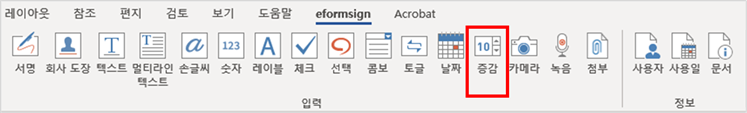
컴포넌트 속성
{kind=link}
① ID
숫자 컴포넌트의 ID를 입력합니다. 예를 들어, 예약 인원을 입력하는 경우 ID는 ‘예약 인원’으로 설정합니다.
② 증감 단위
입력란의 증가/감소 아이콘을 클릭할 때마다 현재 입력된 값에서 증감시킬 값을 입력합니다. 예를 들어, 증감 단위를 100으로 설정하고 문서를 작성할 때 입력란 오른쪽의 위 화살표(▲)를 클릭하면 입력된 값에서 200, 300, …으로 증가합니다.
③ 입력 가능 최솟값/최댓값
입력 가능 최솟값/최댓값을 지정하여 입력 가능한 숫자의 범위를 설정합니다. 예를 들어, 생년월일의 경우 보통 최솟값을 1900, 최댓값을 현재 년도, 증감 단위를 1로 지정합니다. 최솟값 또는 최댓값이 지정된 상태에서 범위 외의 숫자를 입력하면 자동으로 최솟값 또는 최댓값이 입력됩니다. 즉, 최댓값이 100으로 지정되었을 때, 입력란에 101을 입력하면 숫자가 자동으로 최댓값인 100으로 변경됩니다.
④ 입력 데이터 초기화 가능
입력 데이터 초기화 가능을 체크하면 입력된 숫자를 삭제할 수 있습니다. 숫자 컴포넌트는 한 번 숫자를 입력하면 다른 숫자로 변경할 수는 있으나 숫자를 삭제할 수는 없습니다. 그러나 입력 데이터 초기화 가능을 체크하면 아무것도 입력되지 않은 상태로 변경할 수 있습니다.
PC 환경: 컴포넌트를 오른쪽 마우스로 클릭하면 나타나는 팝업 메뉴에서 입력 데이터 초기화를 선택합니다.
모바일 환경: 휴지통 아이콘을 클릭합니다.
⑤ 툴팁 텍스트
입력란에 마우스를 위치하면 툴팁 텍스트에 입력한 설명이 나타납니다.
토글¶
켜짐(ON), 꺼짐(OFF)과 같은 특정한 상태를 나타낼 때 사용합니다. 토글 컴포넌트를 사용하면 컴포넌트를 클릭할 때마다 미리 설정한 항목의 순서대로 입력값이 전환됩니다.

다음과 같이 컴포넌트를 클릭하여 양호, 불량 상태로 변경할 수 있습니다.
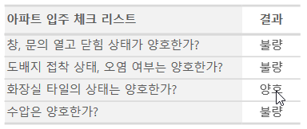
컴포넌트 속성
{kind=link}
① ID
토글 컴포넌트의 ID를 입력합니다. 예를 들어, 첫번째 점검 항목에 대한 컴포넌트인 경우 ‘점검 1’로 합니다.
② Items
토글 컴포넌트를 클릭할 때마다 전환될 항목 리스트를 입력합니다. 엔터(Enter)로 여러 항목을 구분합니다.
③ 입력 데이터 초기화 가능
입력 데이터 초기화 가능을 체크하면 입력된 항목을 삭제할 수 있습니다. 토글 컴포넌트는 한 번 항목을 선택하면 다른 항목으로 변경할 수는 있으나 항목 선택을 취소할 수는 없습니다. 그러나 입력 데이터 초기화 가능을 체크하면 아무것도 입력되지 않은 상태로 변경할 수 있습니다.
PC 환경: 컴포넌트를 오른쪽 마우스로 클릭하면 나타나는 팝업 메뉴에서 입력 데이터 초기화를 선택합니다.
모바일 환경: 휴지통 아이콘을 클릭합니다.
④ 툴팁 텍스트
입력란에 마우스를 위치하면 툴팁 텍스트에 입력한 설명이 나타납니다.
서명¶
서명 컴포넌트는 문서에 서명을 받아야 할 때 사용합니다.

서명 컴포넌트를 추가하면 서명이 필요한 문서에서 아래와 같이 서명 팝업이 뜨고 서명을 직접 그리거나 텍스트를 입력해 서명을 입력할 수 있으며, 기존에 등록한 서명이 있는 경우 이를 사용할 수도 있습니다.

컴포넌트 속성
{kind=link}
① ID
서명 컴포넌트의 ID를 입력합니다. 예를 들어, 계약자의 서명인 경우 컴포넌트 ID는 ‘계약자 서명’으로 합니다.
② 서명 유형
서명 시 어떤 서명을 사용할 것인지 선택합니다.
직접 서명: 서명란을 클릭하면 서명 팝업이 나타나며 그리기, 텍스트, 모바일, 도장, 등록된 서명 탭 중 원하는 방식으로 서명을 입력합니다.
등록된 서명: 문서를 작성하는 사람이 미리 등록해 둔 내 서명이 있는 경우 서명란을 클릭하면 등록된 서명이 자동으로 입력됩니다.
등록된 이니셜: 등록된 서명과 마찬가지로 내 서명에 등록된 이니셜이 있는 경우 서명란을 클릭하면 등록된 이니셜이 자동으로 입력됩니다.
등록된 도장: 등록된 서명과 마찬가지로 내 서명에 등록된 도장이 있는 경우 서명란을 클릭하면 등록된 도장이 자동으로 입력됩니다.
Note
등록된 서명과 이니셜이 있는 경우에는 해당 서명이 서명란에 자동으로 입력되지만, 등록된 서명과 이니셜이 없는 경우 직접 서명과 동일한 서명 팝업이 나타납니다.
Note
문서에 직접 서명이 아닌 직인이나 개인 도장을 사용해야 하는 경우가 있습니다. eformsign에서는 도장 이미지를 사용해 문서의 서명란에 도장을 찍을 수도 있습니다. 도장 이미지를 사용하려면, 서명 팝업에서 도장 탭을 클릭하고 도장 이미지를 선택한 후 확인 버튼을 누릅니다.
③ 서명펜 두께
서명을 그릴 때 표시되는 선의 두께를 설정합니다.
④ 서명펜 색
서명을 그릴 때 표시하는 선의 색을 설정합니다.
⑤ 툴팁 텍스트
입력란에 마우스를 위치하면 툴팁 텍스트에 입력한 설명이 나타납니다.
Note
전자 계약서, 전자 동의서 등 서명이 들어가는 문서에 서명일이 자동으로 입력되도록 설정할 수 있습니다.
전자 서식으로 변환할 문서 파일(워드, 엑셀, 파워포인트)을 열거나 혹은 새 문서를 만듭니다.
서명할 곳에 서명 컴포넌트를 추가합니다.
추가한 서명 컴포넌트의 속성창에 컴포넌트 ID를 입력합니다. 예) 서명
서명일이 입력될 곳에 사용일 컴포넌트를 추가합니다.
사용일 컴포넌트의 속성창을 엽니다.
사용일 표시 유형을 입력 값을 수정한 날짜로 선택합니다.
하단에 나타나는 컴포넌트 ID 입력란에 서명 컴포넌트 ID인 ‘서명’을 입력합니다.
※ 사용일 컴포넌트의 ‘표시형식’을 설정하여 날짜 표시 형식을 원하는 형태로 변경할 수 있습니다.
카메라¶
스마트폰, 태블릿 등 카메라가 있는 기기로 사진을 찍어 문서에 삽입하고자 할 경우 사용합니다. 카메라가 없는 PC 환경에서는 컴포넌트를 클릭하면 이미지 파일을 선택할 수 있는 선택창이 나타납니다.
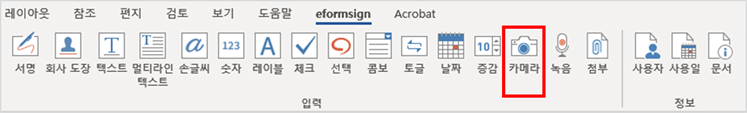
선택한 이미지의 크기가 입력란의 크기보다 클 경우 입력란 안에 들어갈 수 있도록 축소되어 올라갑니다.
Note
카메라 컴포넌트의 경우 카메라가 연결된 환경에서는 카메라 기능이 실행되고, 카메라가 연결되지 않은 환경에서는 이미지 파일 선택 창이 실행됩니다.
컴포넌트 속성
{kind=link}
① ID
카메라 컴포넌트의 ID를 입력합니다. 예를 들어, 신분증 사진을 촬영하는 컴포넌트의 ID는 ‘신분증 사진’으로 합니다.
② 툴팁 텍스트
입력란에 마우스를 위치하면 툴팁 텍스트에 입력한 설명이 나타납니다.
녹음¶
문서에 사용자의 녹음 데이터를 저장해야 할 때 사용합니다. 최대 녹음 시간을 설정할 수 있으며 사용자가 이미 녹음된 내용을 듣기만 할 수 있도록 설정할 수도 있습니다.
OZ in Office에서 녹음 컴포넌트를 추가하면 뷰어에서 다음과 같이 녹음된 내용을 재생하거나 새로운 녹음을 할 수 있습니다.

Note
녹음 제한시간이 1 이상 설정되어 있는 경우, 설정된 시간(단위:초) 만큼 녹음이 되면 자동으로 녹음 완료가 됩니다.
ActiveX 뷰어인 경우 녹음 재생 UI는 Windows 8 이상부터 지원합니다.
녹음 컴포넌트는 PC 환경에서 실행 시 음성 녹음기가 연결된 경우에만 동작합니다.
컴포넌트 속성

① ID
녹음 컴포넌트의 ID를 입력합니다. 예를 들어, 녹음을 재생하는 컴포넌트의 ID를 ‘녹음’으로 합니다.
② 툴팁 텍스트
입력란에 마우스를 위치하면 툴팁 텍스트에 입력한 설명이 나타납니다.
첨부¶
문서에 별도로 첨부 파일을 추가할 수 있도록 할 경우 사용합니다. 첨부 컴포넌트를 통해 문서를 첨부할 경우 문서의 맨 끝에 첨부한 문서가 새로운 페이지로 추가됩니다.
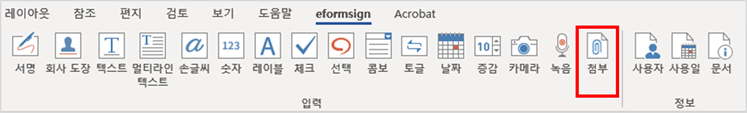
첨부 가능한 파일의 종류와 크기는 다음과 같습니다.
파일 종류: PDF, JPG, PNG, GIF
파일 크기: 최대 5MB까지
컴포넌트 속성

① ID
첨부 컴포넌트의 ID를 입력합니다. 예를 들어, 재직증명서를 첨부하는 컴포넌트의 ID는 ‘재직증명서 첨부’로 합니다.
② 툴팁 텍스트
입력란에 마우스를 위치하면 툴팁 텍스트에 입력한 설명이 나타납니다.
사용자¶
문서를 작성 또는 수정한 멤버의 정보가 문서에 자동으로 입력되게 할 때 사용합니다. 설정에 따라 이름, 연락처와 같은 멤버의 기본 정보 또는 사용자 정의 필드 정보가 사용자 컴포넌트에 자동으로 입력됩니다.
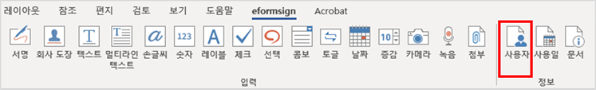
컴포넌트 속성

① ID
사용자 컴포넌트의 ID를 입력합니다. 예를 들어, 문서를 작성한 멤버의 이름을 표시하는 컴포넌트의 ID는 ‘작성자 이름’으로 합니다.
② 사용자 표시 유형
만든 사람: 문서를 최초로 작성한 멤버의 정보를 표시합니다.
액세스한 사람: 문서를 가장 최근에 열람하거나 수정한 멤버의 정보를 표시합니다.
입력 값을 수정한 사람: 특정 컴포넌트에 내용을 입력한 멤버의 정보를 표시합니다.
입력 값을 수정한 사람을 선택하면, 다음과 같이 컴포넌트 ID 입력란이 나타납니다. 여기에 연결할 컴포넌트 ID를 입력합니다.

Note
이 작업을 수행하려면 회사 관리(대표 관리자) 권한 또는 템플릿 관리자 권한이 필요합니다.
Note
담당자 서명란에 서명한 담당자의 이름을 자동으로 입력되도록 하려면, 먼저 담당자 서명란에 서명 컴포넌트를 생성한 후 서명 컴포넌트의 ID를 ‘담당자 서명’으로 지정합니다. 담당자의 이름을 입력할 사용자 컴포넌트를 하나 더 생성합니다. 사용자 컴포넌트의 사용자 표시 유형 속성을 입력 값을 수정한 사람으로 선택하고, 컴포넌트 ID 입력란에 ‘담당자 서명’을 입력합니다.
③ 사용자 표시 정보
멤버의 정보 중 어떤 정보를 표시할지 선택합니다. 멤버 기본 정보 또는 사용자 정의 필드에 추가로 입력한 정보들 중 원하는 정보를 선택합니다.
멤버 기본 정보 종류: 이름, ID, 부서, 직책, 휴대폰, 전화번호
Note
멤버 기본 정보를 수정하려면 대표 관리자 또는 회사 관리 권한이 필요합니다.
멤버 기본 정보를 수정하려면 eformsign에 로그인한 후 회사 관리 > 멤버 관리 메뉴로 이동합니다. 멤버 목록에서 멤버를 선택하고 화면 오른쪽에 나타나는 상세 보기 영역의 정보를 수정한 후 저장 버튼을 클릭합니다.
사용일¶
문서를 작성 또는 수정한 날짜가 문서에 자동으로 입력되도록 할 경우 사용합니다. 설정에 따라 문서를 만든 날짜, 문서에 접근한 날짜, 또는 특정 컴포넌트를 입력한 날짜가 자동으로 입력됩니다.

컴포넌트 속성
{kind=link}
① ID
사용일 컴포넌트의 ID를 입력합니다. 예를 들어, 문서에 서명한 날짜를 표시하는 컴포넌트의 ID는 ‘서명일’로 합니다.
② 표시형식
날짜가 표시되는 형식을 지정합니다.
yyyy: 연도를 표시합니다. (yyyy년 = 2020년)
MM: 월을 표시합니다. 반드시 대문자로 표기해야 합니다. (MM월 = 8월)
dd: 일을 표시합니다. (dd일 = 10일)
‘2020년 2월 5일’처럼 나타나게 하려면, 표시형식에 ‘yyyy년 MM월 dd일’로 입력합니다.
③ 사용일 표시 유형
만든 날짜: 문서를 최초 작성한 날짜를 표시합니다.
액세스한 날짜: 문서를 수정하거나 열람한 가장 최근의 날짜를 표시합니다.
입력 값을 수정한 날짜: 특정 컴포넌트에 내용을 입력한 날짜를 표시합니다.
‘입력 값을 수정한 날짜’를 선택하면, 다음과 같이 컴포넌트 ID 입력란이 나타납니다. 여기에 연결할 컴포넌트 ID를 입력합니다.

Note
이 작업을 수행하려면 대표 관리자, 회사 관리 또는 템플릿 관리 권한이 필요합니다.
Note
계약자 서명일이 자동으로 입력되도록 하려면, 먼저 계약서 서명란에 서명 컴포넌트를 생성한 후 서명 컴포넌트의 ID를 ‘계약자 서명’으로 지정합니다. 서명일을 입력할 사용일 컴포넌트를 하나 더 생성합니다. 사용일 컴포넌트의 사용일 표시 유형 속성을 ‘입력 값을 수정한 날짜’로 선택하고, 컴포넌트 ID 입력란에 ‘계약자 서명’을 입력합니다.
문서¶
문서 컴포넌트는 문서 내에 문서 관련 정보를 입력해야 할 때 사용합니다. 문서 ID와 문서 번호 중 원하는 정보를 선택해 입력할 수 있습니다.
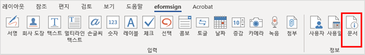
문서 ID는 시스템에서 부여하는 문서 고유의 ID이기 때문에 별도의 설정이 필요하지 않습니다. 문서 번호와 관련된 설정은 템플릿을 업로드한 뒤, 템플릿 설정 > 일반 설정에서 할 수 있습니다.
컴포넌트 속성
{kind=link}
① ID
문서 컴포넌트의 ID를 입력합니다. 예를 들어, 문서 번호를 입력하는 경우 컴포넌트 ID는 ‘문서 번호’로 합니다.
② 문서 정보 유형
어떤 문서 정보를 사용할 것인지 선택합니다.
문서 ID: 시스템에서 모든 문서에 부여하는 문서의 고유한 ID로, 32자리의 알파벳과 숫자의 조합으로 나타납니다. 예) 0077af27a98846c8872f5333920679b7
문서 번호: 템플릿 설정 > 일반 설정에서 설정된 문서 번호입니다. 문서 번호를 설정하는 방법은 문서 번호 생성 및 확인하기를 참고하세요.
폼 파일 업로드¶
OZ in Office를 통해 문서에 컴포넌트를 올려 편집이 완료된 파일은 다음의 순서로 업로드합니다.
리본 메뉴의 파일 그룹에 있는 실행(
 ) 아이콘을 클릭하면 다음의 로그인 페이지가 팝업 창으로 표시됩니다.
) 아이콘을 클릭하면 다음의 로그인 페이지가 팝업 창으로 표시됩니다.로그인하면 전자문서 서식인 폼으로 변환된 문서가 미리보기 형태로 표시됩니다.
업로드 미리보기 화면에서 폼 파일 업로드를 클릭하거나 리본 메뉴의 업로드(
 ) 아이콘을 클릭하면 템플릿 목록과 함께 새 템플릿 추가할 수 있는 화면이 나타납니다.
) 아이콘을 클릭하면 템플릿 목록과 함께 새 템플릿 추가할 수 있는 화면이 나타납니다.새 템플릿 추가를 클릭하면 작성한 폼이 업로드된 상태에서 템플릿을 설정하는 화면이 나타납니다. 좌측 설정 탭을 클릭해 해당 템플릿에 대한 추가 설정을 완료한 후 우측 상단의 저장 버튼을 클릭해 템플릿을 저장 및 생성합니다.

{kind=link}
{kind=link}
{kind=link}
업로드한 템플릿 추가 설정하기¶
템플릿을 업로드하고 나면, 템플릿 제목, 문서 번호, 워크플로우 등 템플릿으로 생성되는 문서에 대한 추가 설정을 할 수 있습니다.
이폼사인에 로그인합니다.
템플릿 관리 메뉴로 이동합니다.
템플릿 설정 아이콘을 클릭합니다.
일반 설정: 템플릿 이름, 약칭, 문서 제목, 문서 번호 등을 설정합니다.
권한 설정:해당 템플릿으로 문서를 생성할 멤버나 그룹, 및 생성된 문서를 관리할 멤버나 그룹을 지정합니다.
워크플로우 설정: 문서의 시작부터 완료까지 작성된 문서가 거쳐갈 단계를 설정합니다.
필드 설정: 필드의 표시 여부, 순서, 기본값, 자동 입력 값 등을 설정합니다.
알림 설정:템플릿으로 생성된 문서에 대한 요청과 알림을 보낼 메시지를 설정합니다.
모든 설정을 완료한 후 저장 버튼을 클릭하고 템플릿을 배포합니다.
Important
해당 템플릿으로 문서를 작성할 수 있도록 하기 위해서는 템플릿을 저장한 후 반드시 배포해야 합니다.
템플릿을 배포하지 않고 저장만 할 경우 템플릿 사용 권한이 있는 있는 멤버들의 템플릿으로 문서 작성 > 템플릿 목록에 나타나지 않습니다.
Note
템플릿에 대한 상세한 설명은 폼 빌더로 템플릿 만들기를 참고하시기 바랍니다.